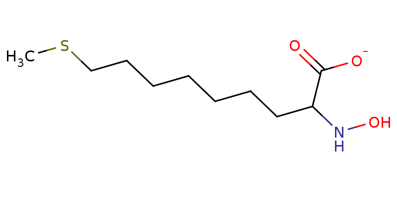

HSA-Net: Hierarchical and Structure-Aware Framework for Efficient and Scalable Molecular Language Modeling
Anonymous authors
Abstract: Molecular representation learning is crucial for tasks like molecular captioning and molecular property prediction. While some existing models are effective at capturing local information and fine-grained features, they neglect the global context. Conversely, models that focus on global information and overall connectivity tend to ignore local structural details. The primary limitation of this task is the lack of approaches that can holistically integrate these information from different scales. Therefore, we propose the Hierarchical and Structure-Aware Network (HSA-Net), a novel framework with two-stage expert modules that enables a hierarchy-guided feature representation. Firstly, we introduce a Hierarchical Adaptive Extractor (HAE) module to processes features from different graph layers. It learns to dynamically switch between a global attention expert for shallow layers and a structure-aware Graph-Mamba expert for deep layers, producing high-quality, multi-level features. Secondly, to adaptively merge these multi-level features, we design a Source-Aware Fusion (SAF) Module. This module flexibly select fusion experts based on the characteristics of the aggregation features with source query tokens, ensuring a precise and effective final representation. Extensive experiments demonstrate that our HSA-Net framework quantitatively and qualitatively outperforms current state-of-the-art (SOTA) methods.
Framework Overview

Key Contributions
- We propose HSA-Net, introducing a hierarchy-guided feature extraction principle to molecular representation learning, resolving the conflict between deep feature extraction and structural detail preservation.
- We design two novel modules, the Hierarchical Adaptive Extractor (HAE) and the Source-Aware Fusion (SAF), which use an expert-based framework to adaptively process and fuse hierarchical and multi-source information.
- Extensive experiments on molecule description and IUPAC prediction datasets show that HSA-Net outperforms current state-of-the-art methods. Ablation studies and visualizations further validate the effectiveness of our approach.
Experimental Results
- HSA-Net achieves superior BLEU and METEOR scores on molecule description and IUPAC name prediction tasks compared to strong baselines.
- Visualization and ablation studies confirm that HSA-Net effectively mitigates over-smoothing and preserves feature diversity in deep layers.
Conclusion
In this work, we introduce the Hierarchical and Structure-Aware Network (HSA-Net), a novel framework designed to resolve the fundamental trade-off in molecular representation learning between capturing fine-grained local structures and global topological patterns. HSA-Net employs a novel two-stage expert framework: the Hierarchical Adaptive Extractor (HAE) dynamically switches between a global attention expert and a structure-aware Graph-Mamba expert to process features from different graph layers, effectively mitigating the over-smoothing problem. Subsequently, the Source-Aware Fusion (SAF) module intelligently integrates these hierarchical features with other multi-source information, obtaining a comprehensive and expressive final representation. Extensive experiments demonstrate that our proposed HSA-Net quantitatively and qualitatively outperforms current state-of-the-art methods on tasks such as molecule description generation and IUPAC name prediction. Further ablation studies and visualizations confirm the efficacy of our hierarchy-guided approach, proving that HSA-Net learns more expressive and separable molecular representations by preserving feature diversity in deep layers.
Demo Samples: Model Comparison
This section presents randomly selected molecular samples and the corresponding descriptions generated by different models.
| SMILES | GPT-4 | GPT-4 ICL | Galactica | LLaMo | Ours | Ground Truth |
|---|---|---|---|---|---|---|
CC=Cc1ccc2oc(-c3ccc(Oc4cc(-c5oc6ccc(C=CC)cc6c5C)ccc4O)cc3)c(C)c2c1 |
The molecule is a complex organic compound featuring multiple aromatic rings and ether linkages. | The molecule is a complex polysaccharide with multiple acetylated amino sugar units, commonly found in natural sources such as bacterial or plant polysaccharides, with data available. | The molecule is a natural product found in Piper aequale with data available. | The molecule is a natural product found in Krameria erecta with data available. | The molecule is a natural product found in Piper aequale with data available. | The molecule is a natural product found in Piper aequale with data available. |
CCCCCCCCC=CCCCCCCCCC(=O)O |
The molecule is the (Z)-stereoisomer of 10-nonadecenoic acid. | The molecule is a long-chain fatty acid known as oleic acid. | The molecule is a natural product found in marine organisms, particularly in soft corals, with data available. | The molecule is a natural product found in the fungus Aspergillus niger with data available. | The molecule is a natural product found in Monascus purpureus with data available. | The molecule is the stereoisomer 10-nonadecenoic acid, a long-chain fatty acid. |
COC1C(COC2CC(O)C(N)CO2)OC(n2c3ccccc3c3c4c(c5c6ccccc6[nH]c5c32)C(=O)N(C)C4=O)C(O)C1O |
The molecule is a natural product found in Actinomadura melliaura with data available. | The molecule is a complex organic compound featuring a polycyclic structure with multiple functional groups. | The molecule is a complex lipid with multiple ester and ether linkages, likely derived from natural sources such as plants or marine organisms, with data available. | The molecule is a natural product found in the fungus Aspergillus fumigatus with data available. | The molecule is a natural product found in Actinomadura melliaura with data available. | The molecule is a natural product found in Actinomadura melliaura with data available. |
CCCC=CC=CC1Cc2cc(O)cc(O)c2C(=O)O1 |
The molecule is a natural product found in Aspergillus with data available. | The molecule is a naturally occurring organic compound known as alpha-tocopherol, which is a form of vitamin E. | The molecule is a complex carbohydrate derivative, likely a glycosylated compound, with data available. | The molecule is a natural product found in the fungus Aspergillus niger with data available. | The molecule is a natural product found in Aspergillus with data available. | The molecule is a natural product found in Aspergillus with data available. |
CC(C)c1cc2c(c(O)c1O)C13CCCC(C)(C)C1C(O)C2OC3O |
The molecule is a natural product found in Salvia aspera with data available. | The molecule is a complex organic compound featuring a polycyclic structure with multiple hydroxyl groups. | The molecule is a natural product with data available. | The molecule is a natural product found in the leaves of the plant. | The molecule is a natural product found in Lepecanthus vestitus with data available. | The molecule is a natural product found in Salvia aspera with data available. |
Demo Samples: Large-Atom Molecules
This table presents model descriptions for molecules with a large number of atoms.
| SMILES | GPT-4 | GPT-4 ICL | Galactica | LLaMo | Ours | Ground Truth |
|---|---|---|---|---|---|---|
CC(=O)NC1C(OC2C(O)C(CO)OC(OC3C(CO)OC(OC4C(O)C(CO)OC(OC5C(CO)OC(OC6C(O)C(CO)OC(OC7C(CO)OC(OC8C(O)C(CO)OC(OC9C(CO)OC(OCC%10OC(O)C(NC(C)=O)C(OC%11OC(CO)C(O)C(O)C%11O)C%10O)C(NC(C)=O)C9O)C8O)C(NC(C)=O)C7O)C6O)C(NC(C)=O)C5O)C4O)C(NC(C)=O)C3O)C2O)OC(CO)C(OC2OC(CO)C(O)C(O)C2O)C1O |
The molecule is a complex glycopeptide structure composed of multiple sugar units linked together, forming a branched polysaccharide chain. | The molecule is a natural product found in Dracaena draco with data available. | The molecule is a natural product found in the leaves of the plant, Crocus sativus with data available. | The molecule is a natural product found in Aspergillus flavus with data available. | The molecule is a natural product found in Dracaena draco with data available. | The molecule is a natural product found in Dracaena draco with data available. |
C=CCCC=CC=CC=CCCC=CC(O)C(O)C1OC(C(O)C(O)C(=C)CCC(O)C2CC(O)C(O)C(C(O)C(O)C=C(C)CCC(O)CC(O)C(O)C(C)C(O)C(O)CC=CCC(O)C=CCCCCCOS(=O)(=O)O)O2)CC(O)C1O |
The molecule is a complex polyhydroxylated macrolide with multiple conjugated double bonds and a sulfonate ester group. | The molecule is a natural product found in Amphidinium with data available. | The molecule is a natural product found in Piper aequale with data available. | The molecule is a natural product found in Aglaia lawii with data available. | The molecule is a natural product found in Amphidinium with data available. | The molecule is a natural product found in Amphidinium with data available. |
CCCCCCCCCC(=O)OC1C(OC2C(C)OC3OC4C(OC(CCCCC)CCCCCCCCCC(=O)OC2C3O)OC(C)C(O)C4O)OC(C)C(OC2OC(C)C(OC(=O)C(C)CC)C(O)C2OC(=O)C=Cc2ccccc2)C1OC1OC(C)C(O)C(O)C1O |
The molecule is a complex carbohydrate derivative, specifically a highly substituted oligosaccharide ester. | The molecule is a natural product found in Ipomoea pes-caprae with data available. | The molecule is a natural product found in Piper aequale with data available. | Molecule SMILES. | The molecule is a 3-hydroxy-4-hydroxymethylpyridine. | The molecule is a natural product found in Ipomoea pes-caprae with data available. |
CC(=O)NC1C(OC2C(O)C(CO)OC(OCC3OC(O)C(NC(C)=O)C(OC4OC(CO)C(O)C(OC5OC(CO)C(OC6OC(CO)C(O)C(O)C6O)C(OC6OC(C)C(O)C(O)C6O)C5NC(C)=O)C4O)C3O)C2O)OC(CO)C(OC2OC(CO)C(O)C(O)C2O)C1O |
The molecule is a complex glycosylated compound, specifically a glycopeptide, consisting of multiple sugar units linked to an acetylated amine group. | The molecule is an amino sugar. | The molecule is a natural product found in the leaves of the plant, Cinnamomum camphora with data available. | The molecule is an amino sugar. | The molecule is an amino sugar. | The molecule is an amino sugar. |
COc1cc(C=CC(=O)OC2C(OC3C(Oc4cc5c(OC6OC(CO)C(O)C(O)C6O)cc(O)cc5[o+]c4-c4ccc(O)c(O)c4)OC(COC(=O)C=Cc4ccc(O)cc4)C(O)C3O)OC(CO)C(O)C2O)cc(OC)c1O |
The molecule is a complex polyphenolic compound, specifically a glycosylated flavonoid derivative. | The molecule is a natural product found in Microcystis aeruginosa with data available. | The molecule is a natural product found in Microcystis aeruginosa with data available. | The molecule is a natural product found in the fungus Aspergillus fumigatus with data available. | The molecule is a natural product found in Arundina graminifolia with data available. | The molecule is a natural product found in Microcystis aeruginosa with data available. |
IUPAC Name Prediction Task
This table presents IUPAC name prediction results for 5 molecules.
| SMILES | GPT-4 | GPT-4 ICL | LLaMo | Ours | Ground Truth |
|---|---|---|---|---|---|
Cc1cc(O)c2ccccc2c1O |
3,4-dihydroxy-1-methylphenanthrene | 2,3-dihydroxy-1-methyl-9H-xanthene | 3-hydroxy-8-methylnaphalene-1-ol | 2-methylnaphthalene-1,4-diol | 2-methylnaphthalene-1,4-diol |
CC(c1ccc(C(F)(F)F)nc1)S(C)(=O)=NC#N |
2-(trifluoromethyl)phenyl N,N-dimethylsulfamoyl cyanamide | 2-[4-(trifluoromethyl)pyridin-2-yl]-2-isothiocyanatopropane | [methyl-oxo-[1-[(6S)-6-[1-methyl-2-(trifluoromethyl)ethyl]pyridin-3-yl]-lambda6-thiazole-3-carbonyl]-methyl]oxy-nitrate | [methyl-oxo-[(1R)-1-[6-(trifluoromethyl)pyridin-3-yl]ethyl]-lambda6-sulfanylidene]cyanamide | [methyl-oxo-[(1R)-1-[6-(trifluoromethyl)pyridin-3-yl]ethyl]-lambda6-sulfanylidene]cyanamide |
CSCCCCCCCC(NO)C(=O)[O-]  |
2-amino-9-nonanoyl-1-carboxylate | sodium 2-hydroxy-2-(methylsulfanyl)nonanoate | (2S)-2-(hydroxyamino)-5-methylpentanoate | (2S)-2-(hydroxyamino)-9-methylsulfanylnonanoate | (2S)-2-(hydroxyamino)-9-methylsulfanylnonanoate |
O=c1c([O-])c(-c2ccccc2)oc2ccccc12 |
4,5-dihydroxy-2-oxo-2H-chromen-7-yl 2-phenyl-2H-chromen-4-olate | 2-benzoylbenzoate | 6-hydroxy-1-phenylpyrano[3,2-d]chromene-4-olate | 4-oxo-2-phenylchromen-3-olate | 4-oxo-2-phenylchromen-3-olate |
[NH3+]C(CS(=O)(=O)[O-])C(=O)[O-] |
N-(carboxymethyl)ammonium sulfonate | 2-amino-3-sulfopropanoic acid | (2R)-2-azaniumyl-3-sulfonatoethanoate | (2R)-2-azaniumyl-3-sulfonatopropanoate | (2R)-2-azaniumyl-3-sulfonatopropanoate |
Property Prediction Task
The values in this table are the predicted molecular properties for each molecule, such as the HOMO energy level, LUMO energy level, or the HOMO-LUMO gap. A model's prediction is more accurate the closer its number is to the "Ground Truth" value
| SMILES | GPT-4 | GPT-4 ICL | Galactica | LLaMo | Ours | Ground Truth |
|---|---|---|---|---|---|---|
C#CC12CCC1C(C)C2 |
0.321 | 0.35 | 0.73 | 0.289 | 0.285 | 0.2849 |
CC(=O)C1(C2CO2)CO1 |
0.122 | 0.135 | 0.62 | -0.251 | -0.2519 | -0.2519 |
CN1CC1(C)C(=O)C=O  |
-0.6326 | 0.155 | -0.52 | 0.145 | 0.141 | 0.1417 |
CC(=O)NC(=N)CCO |
0.412 | 0.27 | 0.54 | 0.2297 | 0.2301 | 0.23 |
Cc1cnoc1NC=O |
0.33 | -0.63 | -0.37 | -0.2319 | -0.2318 | -0.2318 |
Disclaimer
The content provided above is for academic purposes only and is intended to demonstrate technical capabilities. If you have any concerns, please contact us.